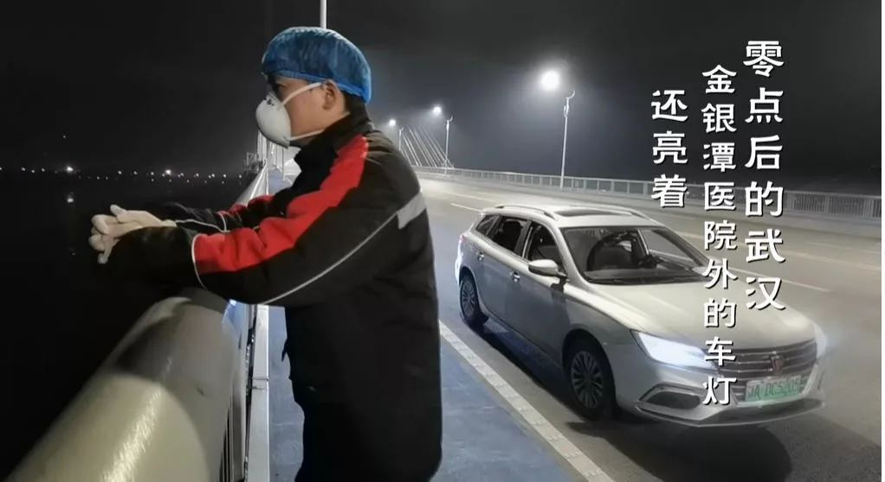
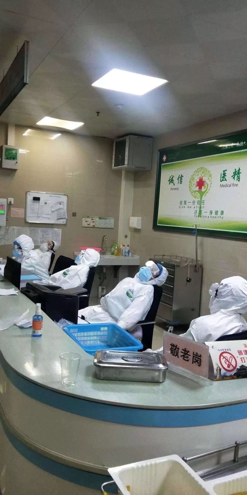
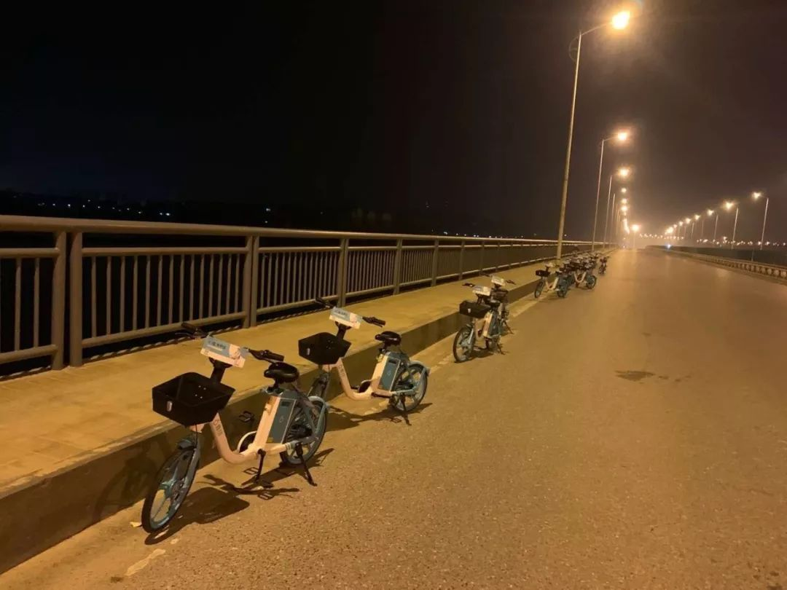
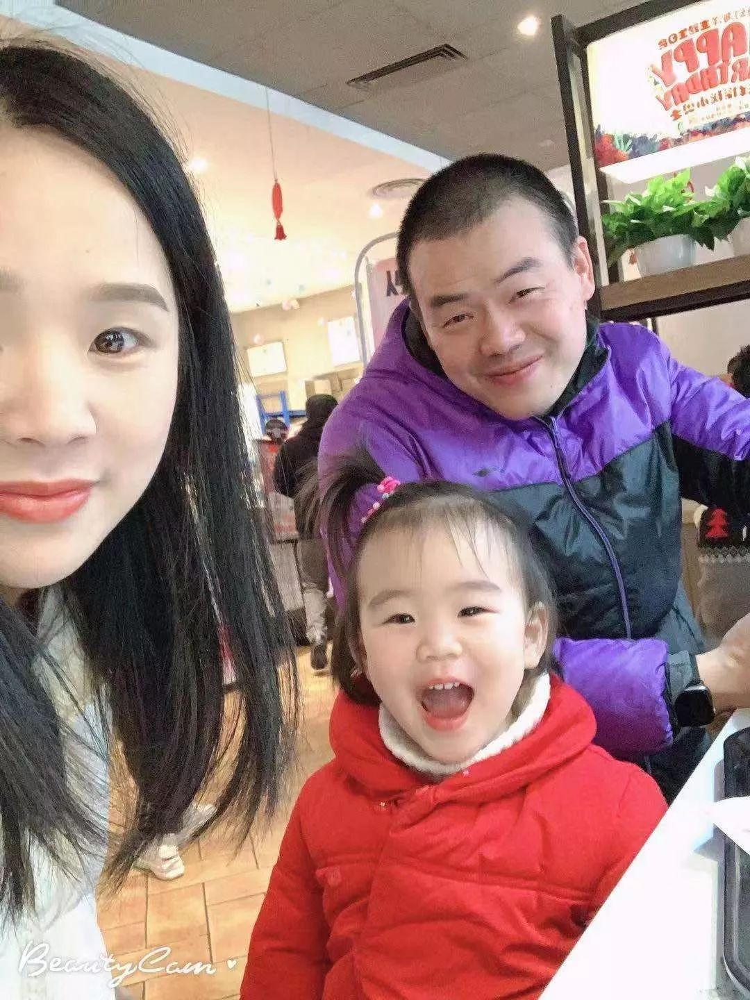
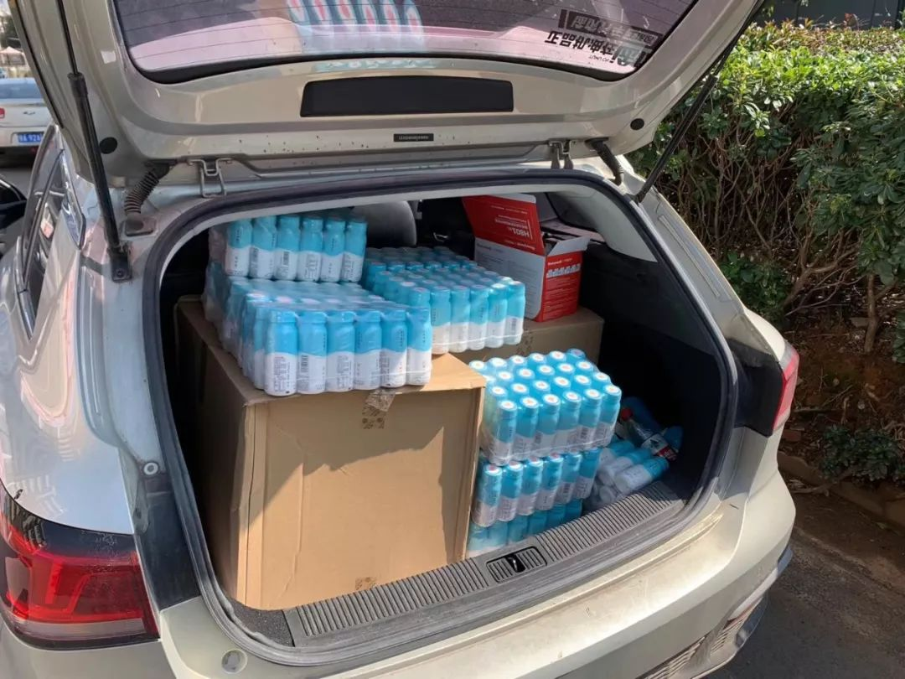
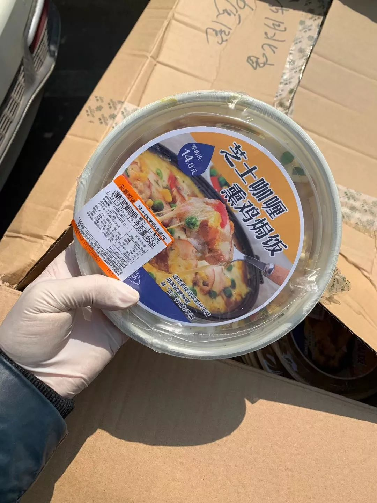
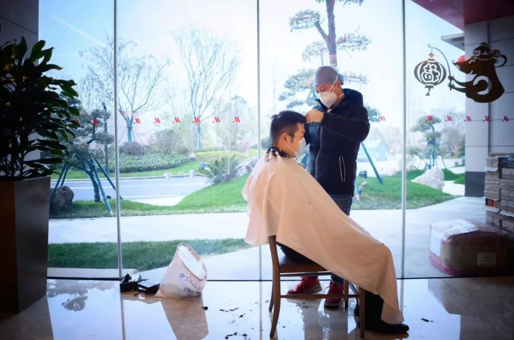
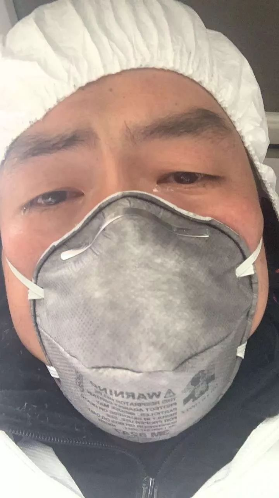

交通停摆之后，武汉医护人员出行难怎么解决
原文链接 备份链接 受到武汉新发布限行令的影响，也出于对车主健康的担忧，善缘车队停止接送医护人员。26日上午，在一些武汉本地的互助群里，提供免费住宿或为医生送餐的武汉市民们还在热议：目前我们还没收到通知，是不是还可以自发去接送医生？ 本 …
一天接送一个医护人员可以节省4个小时，接送100个就是400小时，400个小时，医护人员能救多少人，怎么算我都是赚的。
口述 | 汪 勇
整理 | 吴 雪
我是个快递员，也是个“组局”的人。
2月13日凌晨5点，我在武汉二环外快递仓库的一个高低床上醒来，这个仓库有些特殊，恰好建在下水管道口，潮湿阴冷，我拿起体温计，测了下体温，不超过36度。出门前看了下手机日历，原来，我已经22天没回家了。

“战疫”这些天，汪勇一直住在公司仓库
我是汪勇，生长于武汉，是一名普通的80后快递小哥，从早到晚，送快递、打包、发快递、搬货，日复一日的拼搏，够得上一家三口开销。每天一睁眼就投入到战斗中的我，像一个上了发条的“陀螺”。2月初，陆续有记者找到我跟踪采访，从没想过在这场疫情中，会成为新闻人物。
送护士回家，她哭了一路
事情要从大年三十说起，因为疫情的影响，快递公司放假了。傍晚，我关好仓库返回家中与亲人吃团圆饭。晚上10点，打算哄女儿休息时，突然刷到一名来自武汉金银潭医院护士的朋友圈，对方写道：“求助，我们这里限行了，没有公交车和地铁，回不了家，走回去要四个小时。”需求是6点钟发布的，一直没人接单。

穿戴防护服的汪勇
“去还是不去”当时我很纠结，但又很想去做这个事情。我没敢告诉家人，自己一个人默默地花了一个小时做心理斗争。最后下定决心“去”。老婆是个心理脆弱的人，没经历过什么大事；父母又上了年纪，不能让他们担心。所以，我决定一个人扛下这件事情——用善意的谎言瞒着他们。
第一个问题是怎么出去？发单的护士是第二天早上六点钟下夜班，我告诉老婆说，网点临时需要值班人员，我被派去值班了，顺利瞒了过去。当时手里没有任何防护用具，就先去超市买了两只N95的口罩，六点钟准时到达金银潭医院。护士看到我愣了一下：“我没想到有人会接这个单。”接着，她上车，一路上一言不发，默默抽泣，一直哭到下车。
第一天我接送了接近三十个医护人员往返金银潭医院，一天下来，腿抖个不停。说实话，我心里很害怕，万一感染了怎么办。我开始打退堂鼓劝自己说：“要不算了吧。”但当我看到晚上有护士发单，目的地距离医院有几十公里那么远，没有一个人接。突然又改变了主意。

我又编了第二个“谎言”，告诉老婆说，自己接触了疑似病患，害怕被感染，只能先睡在快递仓库暂时隔离7天，没问题才能回家。开始老婆不听我解释，哭得稀里哗啦，后来情绪稳定后，才算同意。而慢慢的，和医护人员接触多了，我开始明白她们为什么轮休的时候，宁愿走路也要回趟家。
事实上，在全国医疗救援队来之前的一个星期，金银潭医护人员都是连夜奋战，能睡到床的人有10%，剩下的都是靠椅；病人的呻吟声、对讲机24小时呼叫，持续待在这样的氛围里，任何人精神上都难以承受，更别提好好休息了。所以，即便在路上走4个小时，对她们来说，也是短暂的休息。

医护人员在靠椅上短暂小憩

医护人员在靠椅上短暂小憩
大年初四，支援武汉的医疗队越来越多，像给他们打了一剂“强心针”。那天，我本来要接一名医生上班，就突然接到了她的电话：“师傅，你不用来接我了，我今天可以轮休了。” 当时我很开心，我建的医护服务群，进的人也越来越多，我开始发觉自己就算再拼命，也只能满足接送每天300公里的量。
招募志愿者一起接送医护人员
于是，我开始在朋友圈发布消息招募志愿者，硬性要求：必须一个人住，必须佩戴防护用具。如果答案否定，我就拒绝他们。接下来有二三十个人轮流跟着我跑，中间我们跑坏了三台车，后来，六台车基本可以满足需求。但仍然不是长久之计，有人提议可以寻找资源。
我们先是联系上了摩拜单车，他们的投放效率很快，医院、酒店所有的点位，车辆人员一天到位，解决了2公里左右的出行需求；紧接着对接滴滴，因为大公司流程繁琐，耗时很长，一个星期才算搞定。为了配合到三环以外金银潭医院医护人员的出行需求，滴滴把接单公里数从3.5公里以内直接更改为15公里以内。

青桔单车在盘龙桥上设置服务点
青桔单车也是三天内对接完毕，投放了400台，从运维、费用、投放，专门有个团队管理，一下子彻底解决了出行问题。那些天，每天晚上，我都要抽出1个小时，和家人视频演戏，朋友圈发布招募和求助信息不敢对家人公开，但随着出境次数的增多，任务越来越忙，这件事再也瞒不住了。老婆知道后很慌，我做了思想工作，最后还是表示支持理解。
只是我两岁的女儿很黏我，一到晚上就吵着跟爸爸睡，找不到就坐在角落里哭。元宵节那天，看着她趴在我照片上亲了又亲的视频，心里特别愧疚，很想家人。
但我明白自己不能停下脚步，驰援武汉的医疗队是我们的“救命恩人”，政府给他们安排得有饭吃、有地儿住，但细枝末节不一定照顾得到，我们可以查漏补缺，尽我所能不亏待他们。

汪勇一家人
汪勇的女儿看到爸爸照片亲又亲
想吃米饭，我们搞定了一家餐厅
最开始我们募集到了2.2万元，为倒夜班的医护提供泡面和水。后来有一个护士发朋友圈说，好想吃大米饭，我看到后心酸得不行，下定决心第二天一定让她们吃上白米饭，很快就有餐馆老板对接了，16块钱一份，一天100多份。第二天，武汉一家酒楼老板找到我说，可以免费提供盒饭，一天1500份，分别提供给金银潭医院、新华医院和协和医院。
就餐问题解决了，但我又发现另一个新情况：对接餐馆的负荷太大了，产能也已经到顶。我开始设想，在现有许多资源倾斜的情况下，我们能不能有一家专门的供餐餐厅。我很快开始落地实施，一天跑20多家餐厅谈合作，一家家地问能不能免费或低价给我们用场地和员工，很快，金滏山餐厅的老板，与我们目标一致，一拍即合。

金滏山餐厅开始免费供餐
2月5日，金滏山餐厅开始供餐，两荤一素，很快满足了金银潭医院的就餐问题。剩余的产量，每天供应给滴滴司机240份，既然别人是来帮助我们的，我们就不该再把风险嫁接给别人。可惜的是，2月7日，武汉当地的食品安全部门登门查封了这家餐厅，要求停止营业。
原因是在疫情关键期，只允许几家指定单位生产供餐，且该资质目前无法申请。沟通一天未果，无奈之下，我们联系了几家定点供餐单位，发现对方说一份盒饭成本价40元，我们募集的资金根本负担不起。
我当时挫败感很强，但随后事情又开始出现转机。武汉一家本地企业“Today便利店”解决了用餐问题：每天提供金银潭医院所有支援团队的用餐，以及每天支持滴滴车主免费午餐300份。那天，我终于松了一口气。

Today便利店提供给医护人员的物资

Today便利店提供的免费盒饭
我没有任何资源，但一呼百应
我是一个没有任何资源的人，但一路走来，特别感谢追随的志愿者和大企业的帮助。大家都在为这个事情努力，我只是一个组局的人。出行、用餐——每组一个局，我就交给一个人管理，再腾出手来做其他事情。因为平日里和医护人员接触的多，他们的现状我最了解，生活上的支援也是必不可少。
比如，眼镜片坏了，手机屏碎了，需要买拖鞋、指甲钳、充电器甚至秋衣秋裤，在群里通过接龙喊一声，很快就有专人采购，帮他们搞定。记得有一次，上海医疗队的两名医生过生日，我们帮他们买了蛋糕，过了一个难忘的生日；还有一次，因为医院里空调不能开，医护最缺的是用来保暖的无袖羽绒服，我们把商超的羽绒服买得一件不剩，又在广州定了1000件优衣库。

志愿者理发师甘师傅，已经出勤5场，好评如潮

汪勇在群里对接服务安徽援助武汉重症护理组

汪勇组织志愿者为上海医疗队购买庆生蛋糕
印象最深的一件事是，医护人员需要一批防护鞋套，整个武汉市都断货，后来在淘宝线上找到一个商家有货，但在距离武汉市区55公里的鄂州葛店，因为商家也是一名新冠肺炎确诊患者，发不了快递。我连夜开车去取，带回来了2000双。
我每天不停地做事，不停地解决问题，我不知道自己什么时候停下，但只要医护人员呼唤我，我随时都在。截至目前，我们一共对接了1000名医护人员，接下来还要对接3000名驰援武汉的医疗队。

2月2日，汪勇发布朋友圈写道：这么多天我扛住了，但护士的一句关心让我泪流不止
人这一辈子碰不到这么大的事情，不管做什么，尽全力做，不后悔。其实想想，我开始做这件事的初衷很简单，一天接送一个医护人员可以节省4个小时，接送100个就是400小时，400个小时，医护人员能救多少人，怎么算我都是赚的。
2月13日晚，妈妈的朋友看到了我的视频，电话告知了妈妈，对我表示极大的支持。在亲戚朋友眼中，我从小都不是省心的小孩，直到现在父母还在为我操心，帮我带孩子，补贴我的家用，还好，这次办的事儿没给你们丢脸。

征集令
《新民周刊》现面向全国征集新冠肺炎采访对象和真实故事：
如果你是参与抗击新冠肺炎疫情的医护人员或其家属，我们希望聆听你的“战疫”故事，也希望传达你的诉求。
如果你是确诊、疑似患者本人或家属，我们希望了解你和家人如何“抗疫”的过程，让外界了解你的真实经历。
如果你是疫情严重地区的普通市民，我们希望展现你的乐观，并倾听你所需的帮助。
如果你是公共服务人员或各类捐助者，我们希望看到你的“最美逆行”，记录下你的无私。
……
抗击新冠肺炎疫情，我们诚征对疫情了解的社会各界人士，提供相关线索，说出你的故事，让我们用新闻留存这一切。
《新民周刊》新冠肺炎线索征集值班编辑联系方式（添加时请简要自我介绍）：
周一：应 琛 微信号：paulineying0127
周二：金 姬 微信号：gepetta
周三：黄 祺 微信号：shewen-2020
周四：周 洁 微信号：asyouasyou
周五：孔冰欣 微信号：kbx875055141
周六：吴 雪 微信号：shyshine1105
周日：姜浩峰 微信号：jianggeladandong
新闻是历史的底稿，你们是历史的见证者。
期待你的故事、你的线索！

▼
大家还都在看这些
▼
转载请在评论区留言，获得授权！
转载时，须注明作者、出处和微信号


原文链接 备份链接 受到武汉新发布限行令的影响，也出于对车主健康的担忧，善缘车队停止接送医护人员。26日上午，在一些武汉本地的互助群里，提供免费住宿或为医生送餐的武汉市民们还在热议：目前我们还没收到通知，是不是还可以自发去接送医生？ 本 …
原文链接 备份链接 同力协契 共克时艰 武汉“封城”已三周，新冠肺炎全国感染人数还在持续上涨。 所有人都在期待拐点的到来，无数白衣天使依旧坚守在抗击疫情第一线，一刻不敢松懈。社会各界也在通过各种方式参与到这场没有硝烟的抗疫保卫战里。 这 …
原文链接 备份链接 张定宇常说，自己“太急了”。他的急迫感，来自于自己逐渐萎缩的运动神经元细胞，也来自于肆虐武汉城的新型冠状病毒，他想从死神手中抢夺回更多的生命。 张定宇很急。国家电视台拍摄他那天，他从门诊大厅、病房、值班室、会议 …
原文链接 备份链接 对病毒的未知、医疗物资缺乏，又因高强度的工作压力影响到免疫力，导致医护感染达到高峰。随着医护人员防护意识、对病毒认识的增强，相关防护措施到位，后期被感染的医护人员应该越来越少 ****文 | 《财经》 …
原文链接 备份链接 伴随着火神山、雷神山医院开始收治病人，15家方舱医院陆续启动， 各省医疗队开赴武汉，武汉所有确诊患者与疑似病例都将“应收尽收”。 在人类抗击疫病的历史上，“武汉会战”已成为一场史无前例的超级行动 图/新华、中新 武汉 …